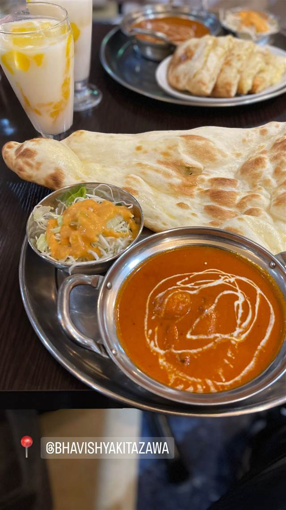

バビシャー（Bhavishya）
おかわり自由のチーズナンとバターチキンカレー
BHAVISHYA KITAZAWA
下北沢駅から徒歩1分、旧店名「サハラ」から改名したインド・ネパール料理店。バターチキンカレーとおかわり自由のチーズナンが人気で、コスパの良いランチセットが評判。
TRIVIA
豆知識
- 旧店名は「サハラ」で、その後「バビシャー」に改名した
REVIEWS
世間の評判
3.27食べログ
スパイスの効いた本格カレーの量
- スパイスがしっかり効いた本格的なカレーの味を評価する声が多い
- ナンが大きくボリュームがあり女性には量が多いと感じる声もある
- ランチであれば千円ほどで満足できコスパが良いと評価する声が多い
- 二階の奥まった場所にあり外からわかりにくいという声が複数ある
食べログ 口コミ72件
| 系譜 | 旧店名は「サハラ」で、改名して現在の「バビシャー（Bhavishya）」に |
|---|---|
| 看板 | バターチキンカレーとチーズナン |
| こだわり | ナンはおかわり自由（食べ放題プランあり） |
| どこから | 23区の外れ・近郊 |
| 営業時間 | 月〜日 11:00-15:00、17:00-22:00 |
| 予算 | 昼 ¥1,000未満 夜 ¥1,000～¥1,999 |
| 場所 | 下北沢駅 東京都世田谷区北沢 |
| メモ | 下北沢駅から徒歩1分。サラダ・ドリンク付きランチセットが580円〜と手頃 |
食べたもの：カレーとナン
NEARBY
近い店・同じ系統の店
-
 ★
醤油・中華そば 下北沢
純手打ち 麺と未来
もちもち極太手打ち麺と海老ワンタンの醤油ラーメン
昼 ¥1,000～¥1,999 夜 ¥1,000～¥1,999
★
醤油・中華そば 下北沢
純手打ち 麺と未来
もちもち極太手打ち麺と海老ワンタンの醤油ラーメン
昼 ¥1,000～¥1,999 夜 ¥1,000～¥1,999
-
 ★
醤油・中華そば 下北沢駅
中華そば こてつ
家系仕込みの無化調醤油に煮干しと魚醤を効かせた中華そば
昼 ～¥999 夜 ～¥999
★
醤油・中華そば 下北沢駅
中華そば こてつ
家系仕込みの無化調醤油に煮干しと魚醤を効かせた中華そば
昼 ～¥999 夜 ～¥999
-
 ★
二郎系(直系) 新代田
ラーメン二郎 環七新新代田店
店主交代で味を一新した非乳化の濃い醤油二郎
★
二郎系(直系) 新代田
ラーメン二郎 環七新新代田店
店主交代で味を一新した非乳化の濃い醤油二郎
-
 カフェ 下北沢
the usual（ジ ユージュアル）
ドライフラワーに囲まれた店内で味わう自家製チーズケーキ
昼 ～¥999 夜 ～¥999
カフェ 下北沢
the usual（ジ ユージュアル）
ドライフラワーに囲まれた店内で味わう自家製チーズケーキ
昼 ～¥999 夜 ～¥999
-
 スパイスカレー 下北沢
Curry Spice Gelateria KALPASI 下北沢店
予約困難な本店仕込みのスパイスカレーとジェラート
昼 ¥1,000～¥1,999 夜 ¥1,000～¥1,999
スパイスカレー 下北沢
Curry Spice Gelateria KALPASI 下北沢店
予約困難な本店仕込みのスパイスカレーとジェラート
昼 ¥1,000～¥1,999 夜 ¥1,000～¥1,999
-
 インド・ネパール 吉祥寺駅
Sajilo Cafe（サジロカフェ）
36種のスパイスを効かせた化学調味料無添加のネパールカレー
昼 ¥1,000～¥1,999 夜 ¥1,000～¥1,999
インド・ネパール 吉祥寺駅
Sajilo Cafe（サジロカフェ）
36種のスパイスを効かせた化学調味料無添加のネパールカレー
昼 ¥1,000～¥1,999 夜 ¥1,000～¥1,999